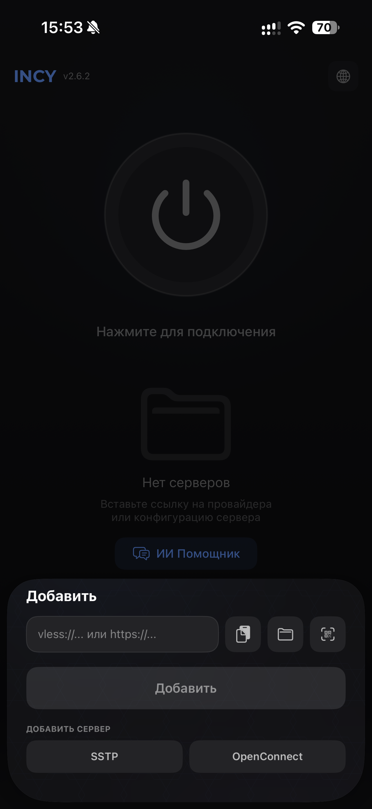
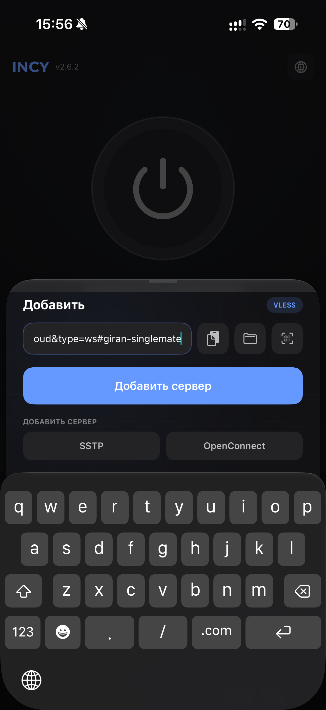
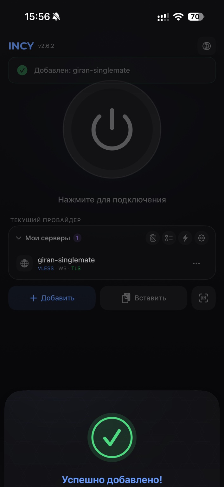
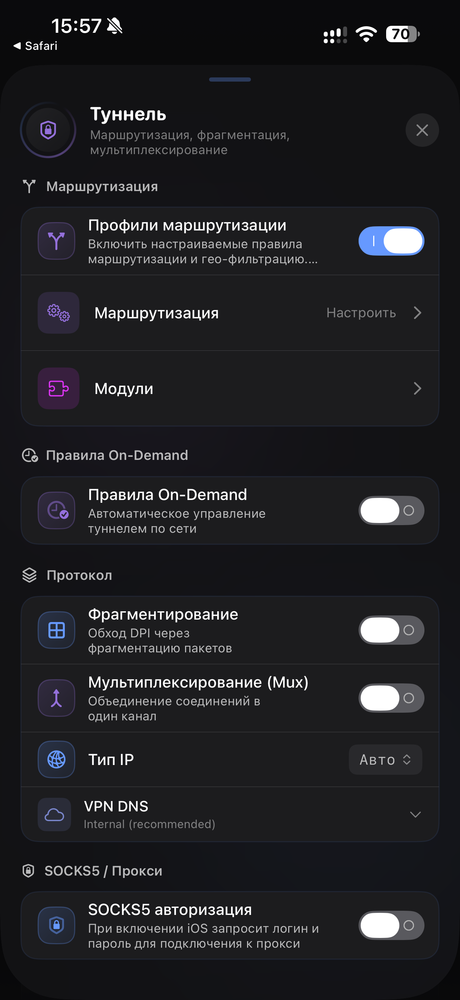
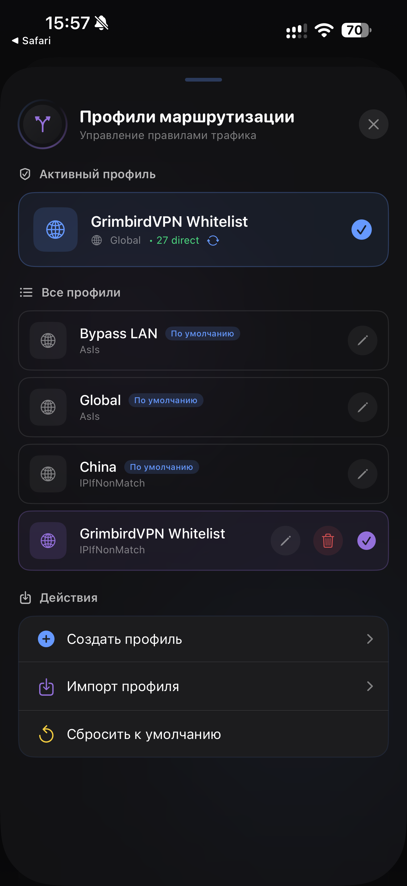
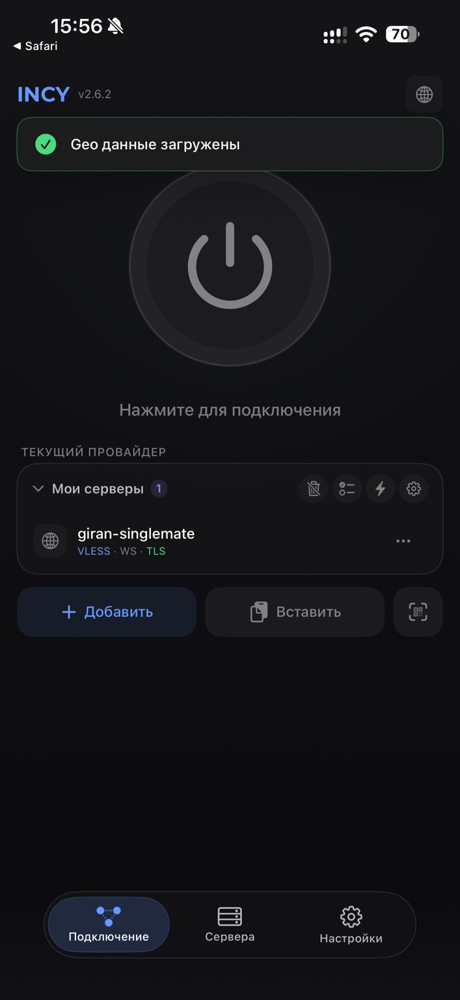

Настройка Incy
VPN + маршрутизация · займёт около 2 минут
Скопируйте персональную ссылку
Скопируйте полученную ссылку vless://…. В Incy на вкладке «Подключение» вставьте её в поле добавления сервера.


Добавьте GrimbirdVPN Whitelist
Нажмите кнопку ниже. Устройство предложит открыть Incy — подтвердите открытие и импорт профиля.
Добавить маршрутизацию в IncyЕсли браузер покажет системное окно «Открыть эту страницу в приложении INCY?» — нажмите «Открыть».

Убедитесь, что маршруты включены
Откройте Настройки → Туннель. Переключатель «Профили маршрутизации» должен быть включён. Затем откройте профили и проверьте активный профиль.


Подключитесь к VPN
Вернитесь на вкладку «Подключение». Убедитесь, что выбран ваш сервер, и нажмите большую кнопку питания.

VPN и маршрутизация настроены.
Интерфейс может незначительно отличаться в зависимости от устройства и версии Incy.
Не забывайте обновлять Incy
Используйте актуальную версию приложения — это важно для стабильной работы, совместимости и доступа к новым функциям.
Не забывайте обновлять Incy
Регулярно устанавливайте обновления Incy. В новых версиях исправляются ошибки, обновляется ядро и улучшается совместимость подключения и маршрутизации.
Для Windows, Linux и других вариантов установки используйте официальный GitHub INCY.